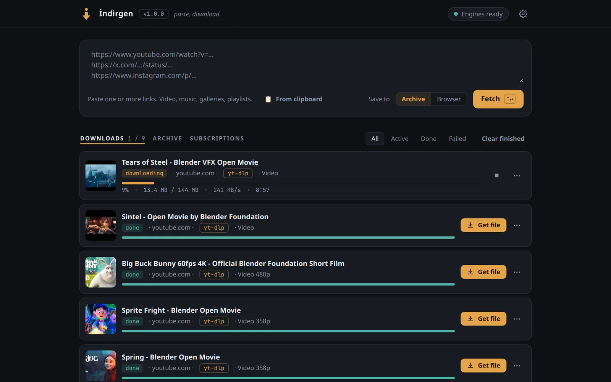
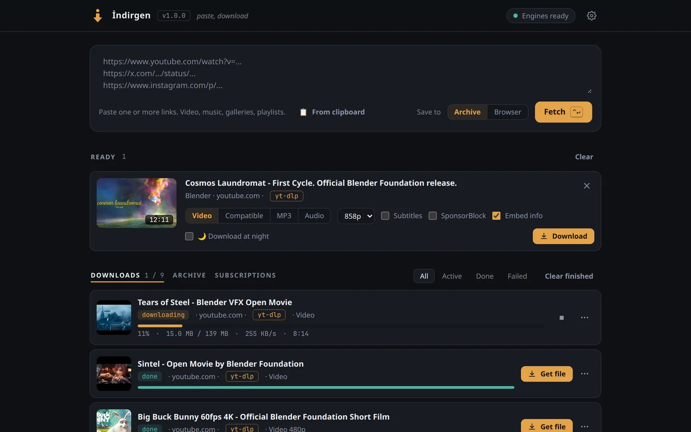
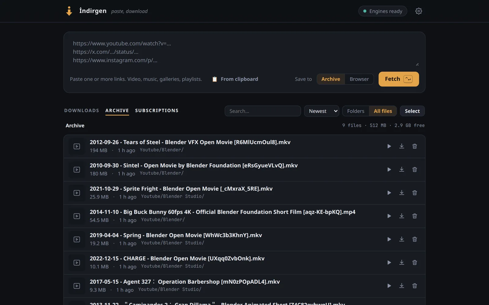
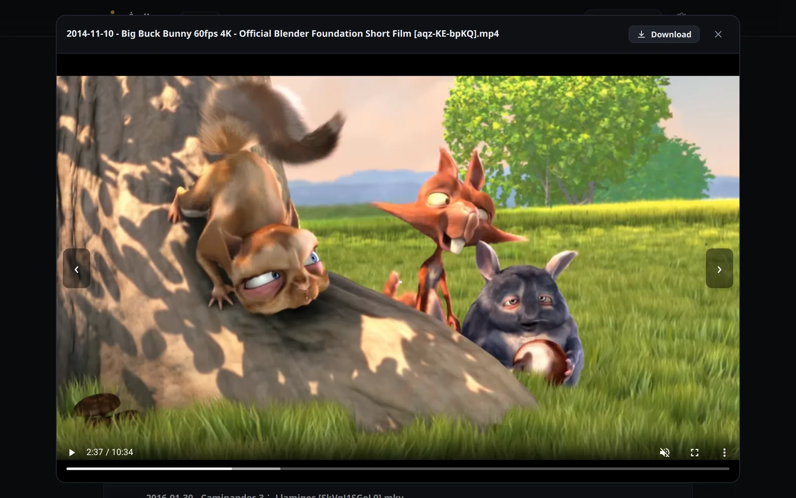
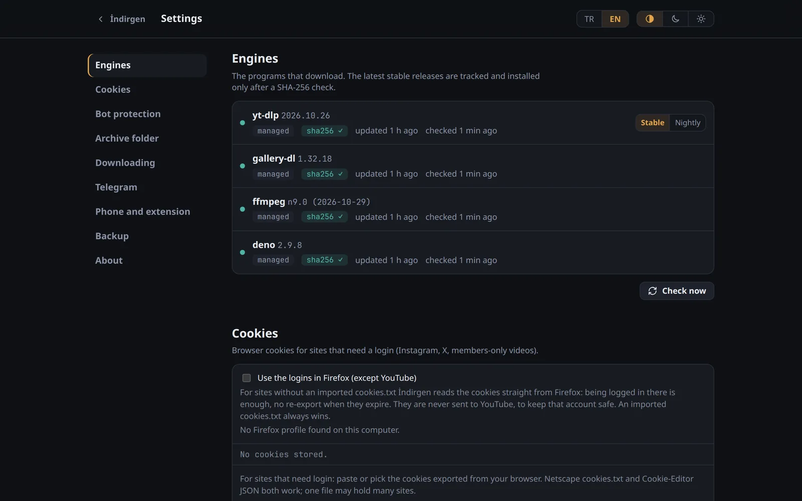
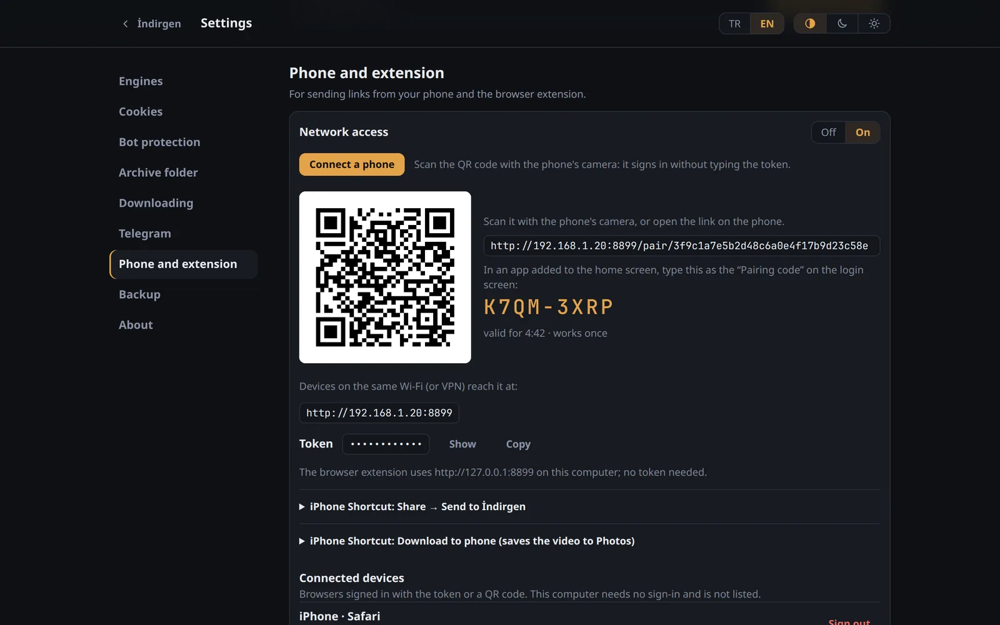
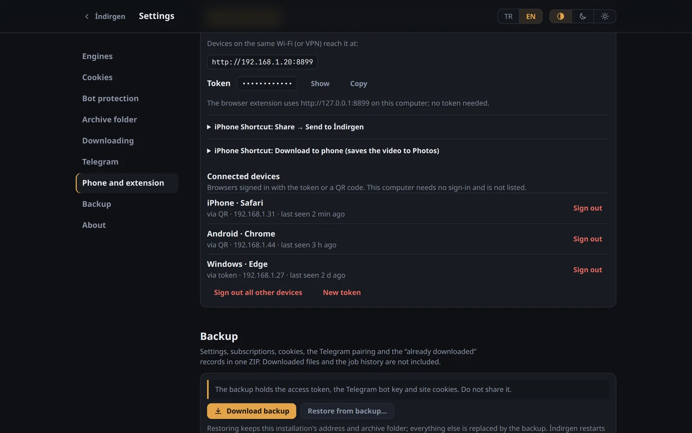
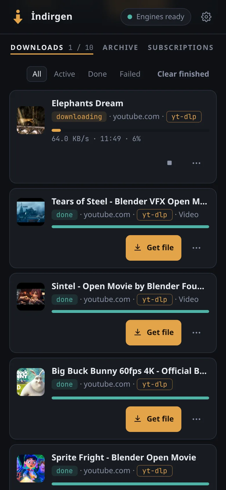
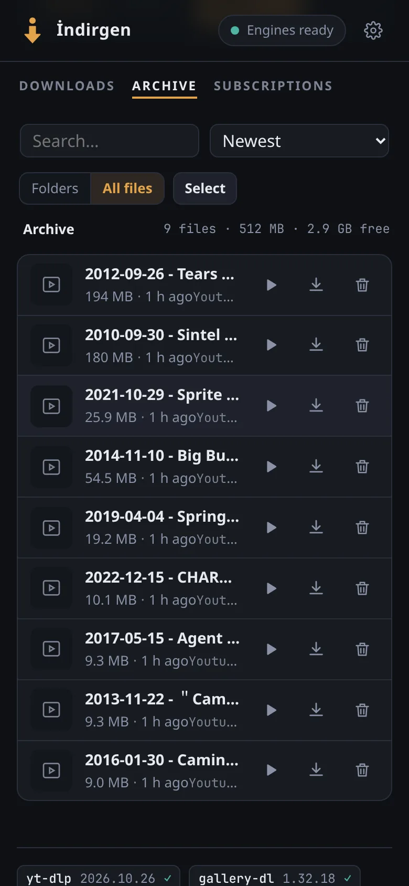

Paste, download.
İndirgen is a media downloader you run on your own computer. Paste links from YouTube and the other sites yt‑dlp and gallery‑dl support: it shows what they are, downloads them in the quality you pick and files everything in one archive. One Go binary that keeps its engines up to date, with no account and no telemetry.
Free and open source under the MIT license. Linux (amd64, arm64); Windows and macOS through Docker Desktop.

A look inside
The same interface on the computer and on the phone, in dark and light, in Turkish and English. The screenshots follow this page's language and theme.












The films in the screenshots are Blender Foundation open movies (CC BY), studio.blender.org. Addresses and devices are examples.
What it does
- Videos, music, galleries, playlists
- From the sites yt‑dlp and gallery‑dl support. İndirgen picks the engine and falls back to the other one; you can also choose.
- A live queue
- Progress, speed and time left. Parallel downloads per site, retries, and a queue that survives restarts.
- Already downloaded?
- Recognised before it downloads the same thing again.
- Subscriptions
- Channels, playlists, profiles and galleries checked on a schedule. Only what is new is fetched.
- Instagram profiles
- Pick sections, such as posts, reels, stories or highlights, or browse and hand-pick posts.
- Logins
- Your Firefox logins used directly, or an imported cookies.txt, kept one file per site.
- Limits and night hours
- A speed limit, downloads that wait for the night, and a guard that pauses new downloads when the disk is nearly full.
- Browser extension
- Chrome, Edge and Firefox: a toolbar button, a context menu entry and Alt+Shift+I send the page to İndirgen.
- Updates and backups
- New releases are checked against SHA256SUMS before they replace the old one. Settings, subscriptions and records go into one backup ZIP.
From your phone
Turn on network access in Settings → Phone and extension, and the phone reaches İndirgen over your Wi-Fi or VPN.
- QR code or short code
- Connect a phone shows a QR code for the camera and an 8-character code to type. Either signs the phone in; no token to copy.
- Home-screen app
- Add İndirgen to the home screen and it opens like an app. On Android it also shows up in the share menu.
- iPhone Shortcuts
- “Send to İndirgen” from the share sheet, and “Download to phone”, which saves the finished video to Photos.
- Telegram
- Send a link to your own bot from any app. It answers when the download is done and sends files up to 50 MB.


Install
Linux
curl -fsSL https://github.com/yfthcn/indirgen/releases/latest/download/install.sh | shThe script downloads the binary for your machine, checks it against the release's SHA256SUMS and installs a systemd user service that starts at boot. No sudo, nothing outside your home folder. Then open http://127.0.0.1:8899.
Docker
mkdir indirgen && cd indirgen
curl -fsSLO https://raw.githubusercontent.com/yfthcn/indirgen/main/compose.yaml
curl -fsSL https://raw.githubusercontent.com/yfthcn/indirgen/main/.env.example -o .env
mkdir -p data downloads
docker compose up -d
docker compose exec indirgen indirgen tokenOpen http://127.0.0.1:8899 on the server and enter the token the last command prints. Images for amd64 and arm64; the engines download into ./data and update themselves there. On Windows and macOS this runs in Docker Desktop, with the commands in the README (experimental).
To remove it: indirgen uninstall, with -purge to delete the settings too. Downloaded files are never deleted. More in the README.
Security and privacy
- It runs on your computer
- It listens on 127.0.0.1 only, until you turn on network access for the phone. Other devices then need the token, and you can sign each one out.
- No account, no telemetry
- Besides the sites you download from, it only talks to GitHub and Codeberg for updates, and to Telegram if you set up the bot.
- Do not put it on the internet
- Use it on your home network or over a VPN such as WireGuard or Tailscale. Anything wider needs a reverse proxy with its own sign-in.
Questions
Does it cost anything?
No. İndirgen is open source under the MIT license, and it needs no account or subscription.
Which sites does it work with?
The ones yt‑dlp and gallery‑dl support: YouTube and many other video, music and image sites. İndirgen keeps both engines on their latest stable release.
Does it run on Windows or macOS?
Through Docker Desktop: the README has the PowerShell and zsh commands. That setup is experimental, not tested on Windows or macOS yet. The native install is Linux only (amd64, arm64).
YouTube stopped working. What now?
Settings → Engines → yt‑dlp → Nightly. Fixes for site changes reach yt‑dlp's nightly builds days before a stable release. Switch back to Stable later.
Where do the files go?
Into ~/Downloads/İndirgen, in folders by site and channel; Settings → Archive folder changes that. With Docker, into ./downloads.
How do I update it?
Settings → About shows new releases and installs them; from a terminal, indirgen update. Docker: docker compose pull && docker compose up -d.
Is downloading allowed?
İndirgen is a tool for media you are allowed to download. Respect copyright and the terms of the sites you use it with.